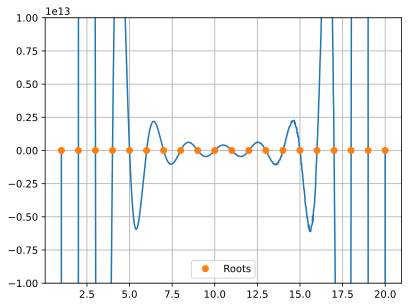
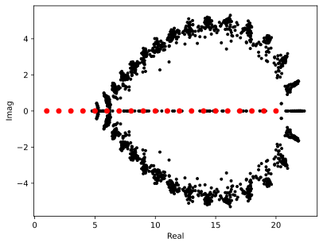

Wilkinson’s polynomial#
\[
p(x) = \prod_{i=1}^{20} (x - i)
\]
%config InlineBackend.figure_format = 'svg'
import sympy
import numpy as np
import matplotlib.pyplot as plt
Find polynomial coefficients using sympy
x, p = sympy.symbols('x p')
p = 1
for i in range(1,21):
p = p * (x - i)
a = sympy.Poly(p, x)
c = a.coeffs()
print('Coefficients = ', c)
Coefficients = [1, -210, 20615, -1256850, 53327946, -1672280820, 40171771630, -756111184500, 11310276995381, -135585182899530, 1307535010540395, -10142299865511450, 63030812099294896, -311333643161390640, 1206647803780373360, -3599979517947607200, 8037811822645051776, -12870931245150988800, 13803759753640704000, -8752948036761600000, 2432902008176640000]
print('Monomial form = ', a)
Monomial form = Poly(x**20 - 210*x**19 + 20615*x**18 - 1256850*x**17 + 53327946*x**16 - 1672280820*x**15 + 40171771630*x**14 - 756111184500*x**13 + 11310276995381*x**12 - 135585182899530*x**11 + 1307535010540395*x**10 - 10142299865511450*x**9 + 63030812099294896*x**8 - 311333643161390640*x**7 + 1206647803780373360*x**6 - 3599979517947607200*x**5 + 8037811822645051776*x**4 - 12870931245150988800*x**3 + 13803759753640704000*x**2 - 8752948036761600000*x + 2432902008176640000, x, domain='ZZ')
The coefficients are returned in this order
\[
p(x) = c[0] x^{20} + c[1] x^{19} + \ldots + c[19] x + c[20]
\]
i.e., c[0] is the coefficient of the largest degree term.
Implement the polynomial
# As a product of factors
def wpoly(x):
p = 1.0
for i in range(1,21):
p = p * (x - i)
return p
# Computing it as a monomial
def mpoly(c,x):
p = 0.0
for i,a in enumerate(c):
p += a * x**(20-i)
return p
Plot the polynomial in \([1,20]\) by sampling it on a uniform grid
xp = np.linspace(1,20,1000)
#yp = mpoly(c,xp)
#yp = wpoly(xp)
yp = np.polyval(c,xp)
plt.plot(xp,yp)
plt.plot(np.arange(1,21),np.zeros(20),'o',label='Roots')
plt.legend()
plt.grid(True)
plt.ylim(-1e13,1e13);

Computing the polynomial as a monomial is subject to lot of rounding errors since the coefficients are very large.
Find the roots using numpy
np.roots(c)
array([19.99988881, 19.0011451 , 17.99439763, 17.01653936, 15.96390904,
15.05398302, 13.93519009, 13.05950452, 11.95943341, 11.02299817,
9.99057464, 9.0030391 , 7.9992916 , 7.0001177 , 5.99998696,
5.00000088, 3.99999997, 3. , 2. , 1. ])
Randomly perturb the monomial coefficients and find roots
\[
c_0(1 + \epsilon r_0) x^{20} + c_1 (1+ \epsilon r_1) x^{19} + \ldots + c_{20}(1+ \epsilon r_{20})
\]
where \(\epsilon = 10^{-10}\) and each \(r_j\) is an independent Gaussian random variable with mean zero and standard deviation 1.
eps = 1e-10 # Relative perturbation
nsamp = 100 # 100 random perturbations
for i in range(nsamp):
r = np.random.normal(0.0, 1.0, 21)
cc = c * (1 + eps * r)
roots = np.roots(cc)
plt.plot(np.real(roots), np.imag(roots),'k.')
plt.plot(np.arange(1,21),np.zeros(20), 'ro')
plt.xlabel('Real'); plt.ylabel('Imag');

The relative perturbation in coefficients is \(O(10^{-10})\) while the change in roots is \(O(1)\), which indicates a very high sensitivity wrt the coefficients.